短劇素材突破計畫｜2026-10-15 v4｜營銷美術
能否用 AI 短劇擴大受眾圈，
搶回被短劇佔走的曝光？
這是一個值得討論的機會，不是已證實的結論。短劇用戶大量同時玩遊戲，部分市場的短劇用戶「博彩」標籤明顯偏高；博弈類劇情素材還少，AI 讓製作成本降一半以上。
一現況痛點：預算集中在付費與回流，新受眾進不來
大部分專案的預算都往付費型、再行銷集中，安裝型（拉新）比例一路下降。
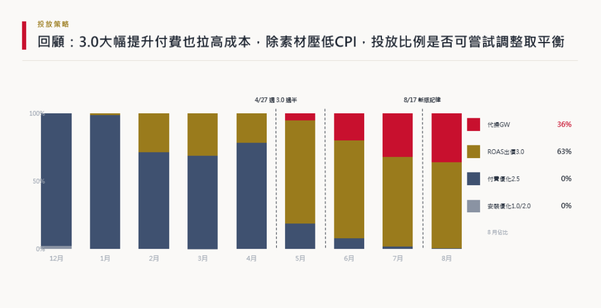
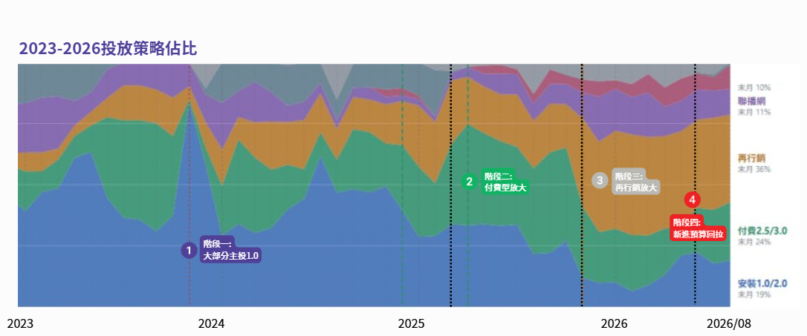
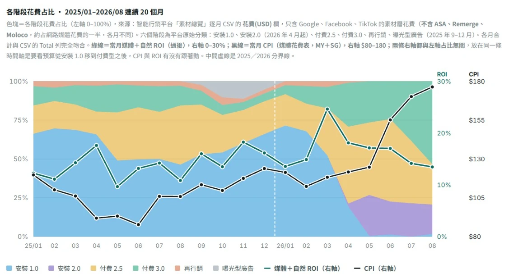
日本市場
依賴大量回流＋付費型，重新規劃新用戶導入
增加更多類型的素材，以應對不同客群
台灣市場
多為付費型投放，又遇 Meta 限制
拉新管道變窄、CPI 上升，尋找更多買量拉新機會
美國市場
策略為主打付費型廣告
付費受眾曝光機會有限，如何增加更多曝光機會
馬來市場
同樣遇 Meta 限制
要找 Meta 以外的突破口
要回答的問題：每個市場都要爭取更多曝光機會、觸及更廣的用戶，也需要新的投放突破，短劇能否成為切入點？
二短劇全球現況與遊戲的關係（數據）
只用正式報告的數字講大趨勢：短劇是每天 25 分鐘的習慣，觀眾和遊戲玩家重疊。
數據來源：Sensor Tower、DataEye、廣大大、點點數據、Google、Meta、中國網絡視聽協會、西安交大×中國日報海媒研究院等第三方報告
短劇用戶還有哪些其他興趣（各國前 5 名）ⓘ
| 市場 | 第 1 | 第 2 | 第 3 | 第 4 | 第 5 |
|---|---|---|---|---|---|
| 日本 | 超休閒遊戲玩家 3.8x | 靈活支付用戶 3.0x | 時尚達人 2.9x | 漫畫與動漫愛好者 2.7x | 電子閱讀愛好者 2.6x |
| 美國 | 電子閱讀愛好者 3.6x | 靈活支付用戶 3.4x | 時尚達人 3.4x | 個人轉帳用戶 3.1x | 外賣餐飲用戶 3.0x |
| 韓國 | 靈活支付用戶 7.0x | 博彩用戶 2.7x | 休閒遊戲玩家 2.6x | 超休閒遊戲玩家 2.6x | 加密貨幣交易者 2.3x |
| 印尼 | 批發採購者 5.4x | 博彩用戶 2.2x | 個人轉帳用戶 1.9x | 超休閒遊戲玩家 1.8x | 電子閱讀愛好者 1.8x |
| 印度 | 超休閒遊戲玩家 2.36x | 博彩用戶 2.30x | 個人轉帳用戶 2.20x | 零工從業者 2.03x | 核心遊戲玩家 2.00x |
| 巴西 | 拿鐵愛好者 17.4x | 超休閒遊戲玩家 2.7x | 電子閱讀愛好者 2.3x | 靈活支付用戶 2.2x | 購物達人 2.1x |
報告只列這 6 國；台灣、馬來沒有數據。6 國裡 5 國的前 5 名有遊戲標籤，3 國有博彩標籤。
2026Q1 全球短劇內購收入：按市場ⓘ
短劇正佔據用戶的時間與廣告曝光。娛樂遊戲已廣泛借用短劇，博弈遊戲值得試嗎？能不能蹭到短劇的流量，強化曝光機會，觸及更多用戶？
- 台灣／馬來：短劇在兩個市場成長快，YouTube 短劇觀看時長分居全球第一、第三ⓘ
- 受限國家：短劇素材 95.6% 投在 Meta，只有 1.1% 在 Googleⓘ
- 全球：短劇廣告幾乎在全球曝光，觀眾已經或即將被養成習慣，能不能蹭到這批曝光？
策略地圖
① 蹭短劇
- 借流量高的內容拿到更多曝光，也有所本地找到成功率高的題材
- 受限制的國家，能否不放遊戲畫面也能投放
- 短劇 AI 人物的法規還模糊，能否借鑑熱門角色，蹭到更多流量
② 依習性投放
- 在對的地方投給對的人，讓特殊腳本真正發揮效果
- 美國博弈廣告已大量使用，結合熱門題材爭取更多曝光機會
③ 設目標
三短劇套路分析
① 各國短劇演什麼：骨架一樣，包裝在地化
短劇平台簡介
前幾名的平台出自不同公司：13 個主要 App 分屬約 11 個老闆，幾乎都是中國公司在新加坡、香港設的發行主體。同一家公司經營多個 App 的只有崑崙萬維（DramaWave、FreeReels、HotDrama）、字節（Melolo 等 3 個）、中文在線（ReelShort、UniReel）。ⓘ
各國投放量體（近 90 天素材數，萬支）ⓘ
| 平台 | 日本 | 台灣 | 美國 | 馬來 |
|---|---|---|---|---|
| DramaWave | 108.6 | 56.2 | 149.6 | 85.8 |
| NetShort | 60.9 | 33.4 | 90.1 | 50.5 |
| FlickReels | 24.7 | 22.9 | 27.9 | 24.9 |
| DramaBox | 13.1 | 11.9 | － | 12.8 |
| ReelShort | 8.4 | － | － | － |
| ShortMax | 4.6 | － | － | － |
| StoryReel | － | 7.9 | 27.3 | 8.6 |
| VibeShort | － | － | 24.7 | － |
DramaWave、NetShort 在四個市場都是投放量最大的兩家；美國的量體最大。
主要平台背後公司
| 平台 | 母公司 | 主力市場 | 變現 |
|---|---|---|---|
| DramaWave | 崑崙萬維 | 歐美高付費市場、台灣第 5 大 | 付費（訂閱） |
| NetShort | 麥芽文化 | 美、日、台 | 查無公開資料 |
| FlickReels | 杭州掌玩 | 美國、東南亞，主打銀髮劇 | 付費為主 |
| DramaBox | 點眾科技 | 美國 54%、日 2、台 4、馬 6 | 付費 |
| ReelShort | 中文在線 | 美國（佔營收 70%） | 付費＋看廣告 |
| ShortMax | 九州文化 | 台灣、東南亞起家，後進美日 | 查無公開資料 |
| GoodShort | 新閱時代 | 美國 66%、日本第 2 | 查無公開資料 |
| Melolo | 字節跳動 | 印尼、泰國、馬來 | 看廣告免費 |
| StoryReel／VibeShort | 查無公開資料（同一團隊雙品牌） | 海外英語市場 | 付費＋看廣告 |
同一部劇在 20~75 個 App 投放，和「同公司多 App」關係不大（同一老闆最多 3 個 App）；比較可能是片源授權給很多平台（推論，沒有公開資料直接證明）。
拆解短劇內容
| 市場 | 流行題材 | 包裝 |
|---|---|---|
| 台灣 | 復仇逆襲、鬼新娘、豪門 | 西方臉 AI 劇＋繁中字幕，「限時免費＋倒數」 |
| 日本 | 懸疑反轉、重生逆襲、契約婚姻（83% 偏好本土劇ⓘ） | 出海平台：西方 AI 臉；本土平台：日本真人＋網路標題字卡「〜した結果」 |
| 美國 | 億萬富翁、閃婚、替身新娘、狼人 | 全 AI 西方臉，骨架是中國網文 |
| 馬來 | 和美國同一批英語劇 | 沒有自己的劇，前 10 名多與美國相同 |
各國重複投放的同一部劇ⓘ
第三方數據網 AppGrowing（AG）的短劇專區，能掌握各國熱門劇本排行。
| 劇名（各國片名） | 台 | 日 | 美 | 馬 | 套路 |
|---|---|---|---|---|---|
| 鬼新娘遊戲／ホラーゲーム／Horror Game | ● | ● | ● | ● | 恐怖遊戲系統、看見別人看不到的真相 |
| 爸爸，你的擁抱價值幾何？／Daddy, How Much for a Hug? | ● | － | ● | ● | 萌寶、親情、身分偽裝 |
| Fifty Cents to Find My Billionaire Dad（全球第 1，同時 52 個 App 投放） | － | － | ● | ● | 萌寶認親、神豪 |
| Even Billionaires Beg Me | － | － | ● | ● | 透視異能、神豪 |
| Testing Love: Married a Disabled Billionaire | － | － | ● | ● | 閃婚、隱藏身分 |
| Married to a Hidden Fortune | － | － | ● | ● | 贅婿、隱藏富豪 |
| Madam Commander | － | － | ● | ● | 被當眾開除、對方後悔 |
| Substitute Bride | － | － | ● | ● | 替身新娘、豪門 |
| 賽道盡頭，是妳／憎しみの再会 | ● | ● | － | － | 破鏡重圓 |
| 六翼天使／六翼の天使と最強魔王 | ● | ● | － | － | 異能、魔王 |
台日另有共用同一段開場：「丈夫把小三藏進家具、妻子提前回家撞見」。馬來前 10 名有 9 部和美國重疊。
各國重複出現的套路
| 套路 | 台灣 | 日本 | 美國／馬來 |
|---|---|---|---|
| 隱藏富豪、神豪 | 縱橫商海之屠龍少年、踏過泥沼真龍歸位 | 選択の日、私は最強の獅王 | Even Billionaires Beg Me、Married to a Hidden Fortune |
| 替身、契約婚姻 | 胖妻變辣妻，總裁跪求復合 | 運命を乗り換える新娘、身代わり花嫁 | Substitute Bride、Testing Love |
| 復仇、被拋棄後翻身 | 月落星沉，與你訣別 | 復讐の盲目令嬢、夫に捨てられた令嬢 | Madam Commander |
| 萌寶、親情 | 爸爸，你的擁抱價值幾何？ | 鳳凰の養女 | Fifty Cents、Daddy, How Much for a Hug? |
| 恐怖遊戲、系統異能 | 鬼新娘遊戲、六翼天使 | ホラーゲーム、六翼の天使 | Horror Game |
同一部劇，三種語言版本：鬼新娘遊戲
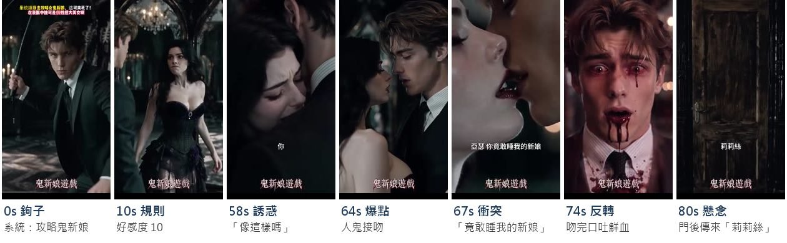
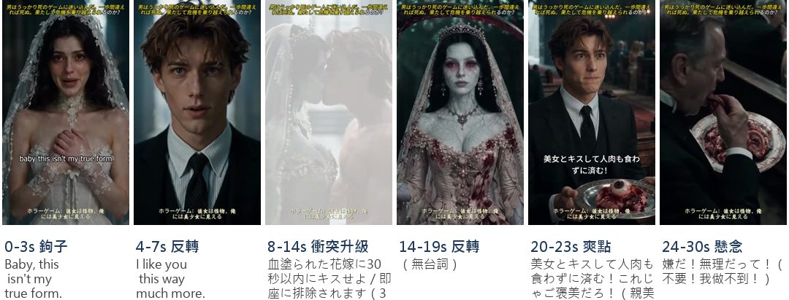
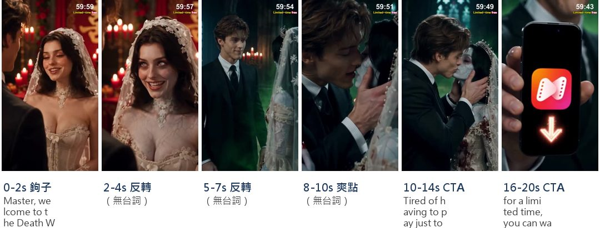
各國代表劇
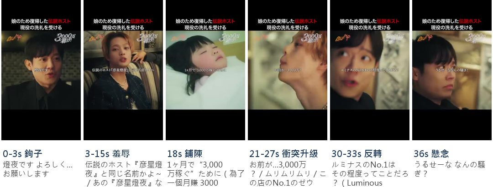
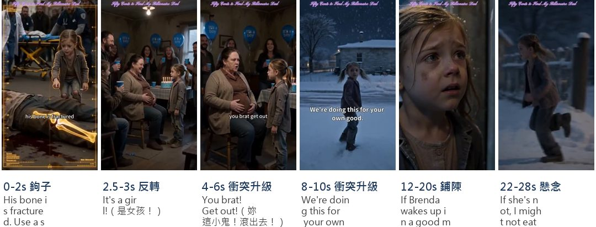
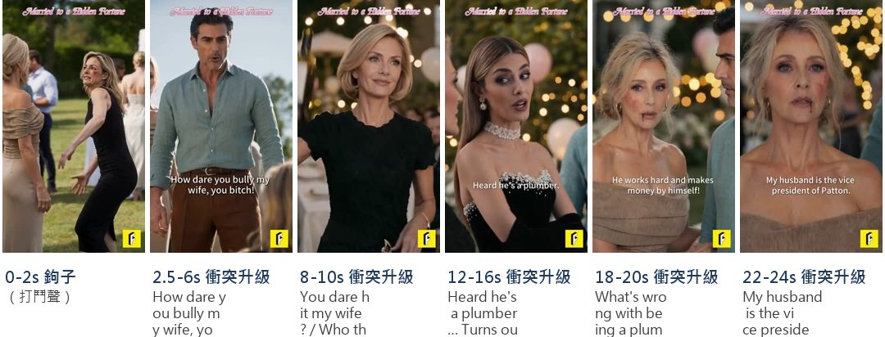
② 娛樂遊戲怎麼做
影片標題旁的黃色小標＝這支素材和短劇熱門題材重合的類型（被看扁打臉、前任／背叛、婚戀／見家長、萌寶／親情、恐怖／系統異能、隱藏富豪），依劇情描述自動比對。
拆了 194 支遊戲廣告ⓘ：娛樂類 108 支（台灣 23、日本 21、美國 21、馬來 20、未標 23）、博弈類 86 支（台灣 22、日本 13、美國 40、馬來 11）
遊戲畫面怎麼呈現：娛樂 vs 博弈ⓘ
點色塊可以看這一類的代表素材。
被羞辱後的逆襲：同短劇套路
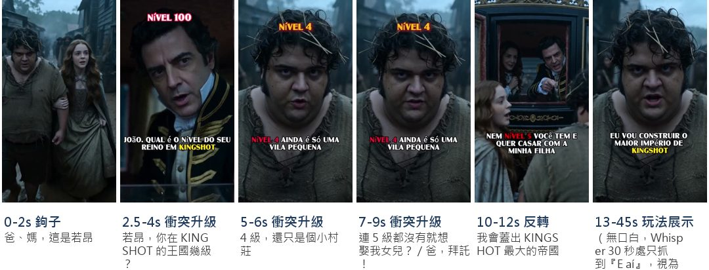
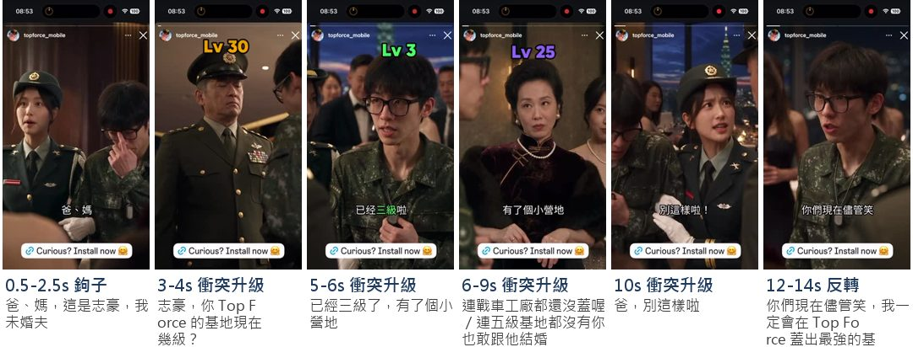
套到我們：用遊戲數值當身分羞辱（「你 VIP 幾級？」「這台你都不會打？」），劇情不翻身，翻身交給中獎畫面。
更多案例：49 支
遊戲等級當門第：被家人、伴侶驗等級見家長或伴侶直接問「你幾級」，等級低就被趕、被甩
Kingshot同一胖子Hans系列（與置頂巴西版同稿），AG可見8支以上（2 支）
胖子Hans見家長，被問王國幾級
同一Hans換戶外，岳父母考等級
半夜別修仙同一套見家長稿，台、馬兩市場共用（3 支）
富爸以修仙境界評人，嫌沒出新手村
同一稿投馬來華人，被叫趕緊滾
築基期就想見家長，被罵廢物
其他單支案例
見家長被問打到第幾關，被趕出門
妻子拿隔壁王哥戰力比，要離婚
搶回女友，被嘲裝備過時兩個月
被男友提分手，當場比戰力
男友嫌她戰力低，叫她先去養成
遊戲戰力當地位：公共場合被看扁超市、餐廳、教室、停車場，低戰力就被刁難讓位
Rise of Kingdoms一稿多場景：餐廳／教室／超市換開場，骨架相同（3 支）
餐廳：妻子跟5千萬戰力老闆約會
教室：班霸以戰力霸座羞辱書呆
超市：低戰力只給一個袋子
Evony一稿兩場景：健身房／自習室（2 支）
跑步機：5百萬戰力女霸佔不讓
自習室：比戰力吵人反被女生碾壓
其他單支案例
G-Class男以戰力搶車位被反壓
LV4園丁被999級嗆認清位置
咖啡店點頂級咖啡，被嫌關卡低只配白開水
城門廣場被十萬戰力者喝令讓開
窮、沒錢被嫌窮、付不出錢，被趕出門或被罵滾
Rent Please一稿兩市場：台、美同劇本換配音（2 支）
窮女孩被趕：房子只租有錢人
同一稿英文版，被趕去住垃圾場
其他單支案例
百萬帳單要AA被拒，裝備被嫌舊
女友嫌卡車破甩人，玩家幫修車
丈夫嫌窮施暴，抱著小三
拿破過濾爐想入股，被罵滾出去
外表、身材、穿著被罵胖、被笑土、穿錯衣服被當眾嘲笑
Last Shelter: War Z同一胖男人設系列，美、馬兩市場（3 支）
被罵肥醜垃圾，滾去餵殭屍
被罵胖得像豬，5級被趕出去
胖男被罵無用累贅，自己挖地堡
其他單支案例
禮服撐破又撞衫小三，被離婚
前任婚禮換裝失敗，被嘲還好分手
同劇本：穿錯衣去前任婚禮被嘲
豪門宴會被親戚笑土包子
仙子嫌他穿太破，不配並肩
相親戰甲被嘲玻璃仿冒，當場敲碎
感情背叛、被甩撞見伴侶偷情或被甩，被情敵踩，翻身交給玩家
床底發現肚兜，丈夫偷情反嗆
妻子偷情，他被關在門外
女友被大哥摟走，自己被打倒
女友跟200級男跑了，被笑等級低
女友臨走罵Loser，胖男立誓
撞見偷情被踢出門，又被開除
新郎婚禮前移情，嫌新娘不會玩
女友坐別人戰車，笑他小癟三
職場：被上司、同事看扁或開除辦公室裡被罵無禮、被比業績、被當眾開除
オハヨーカイ！ヒーロー同一辦公室系列，兩支都是低調者反殺（2 支）
不向社長問好被罵，其實是排行第一
會議比業績變比戰力，男同事被碾壓
其他單支案例
被當眾開除，決定自己創業
被院長陷害開除，妻離後開醫院翻身
老闆當眾笑他禿頭，憤而自己開店
被老闆娘推倒開除，修破屋翻身
老闆未婚妻看她不順眼當場開除
相同角色加深印象：瘋狂水世界
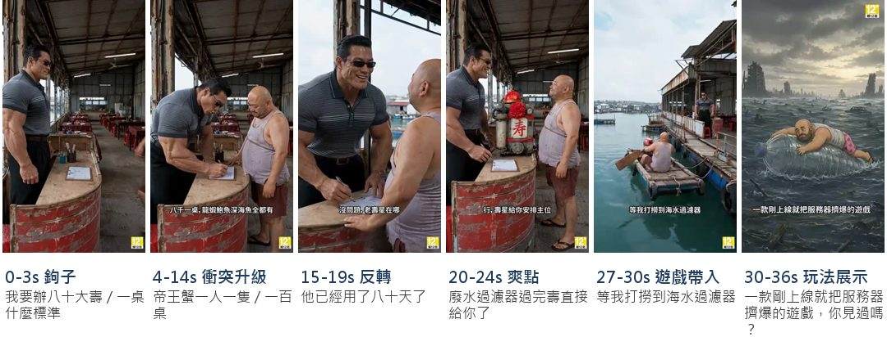
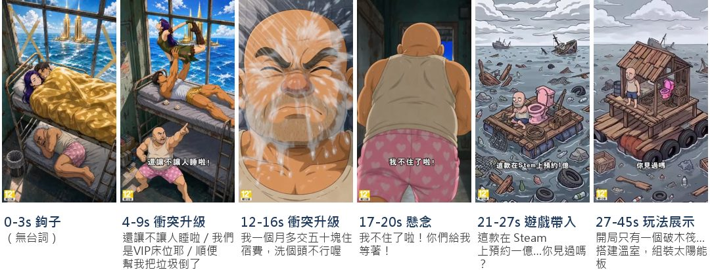
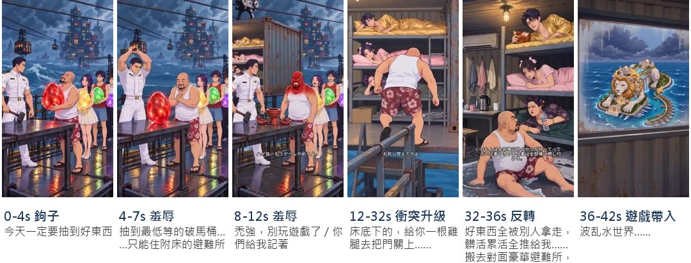
同一個非明星角色、不追前情，靠認得角色累積印象。
其他產品也在做：18 支
落魄胖男同一個被嫌棄的胖男主角，每支換場景被羞辱後自己翻身
Wild Water World（瘋狂水世界）同一光頭胖男，真人版與動漫版並行（5 支）
真人版光頭男，拼好床被鄰居擠走
同一光頭男，回收站被看人給價
動漫版同一光頭，上舖熱湯淋身
同一光頭睡最底層，被上兩層吵醒
日文版同一光頭，寄人籬下被使喚
Last Shelter: War Z同一藍衣大鬍子胖男（AI）（2 支）
同一藍衣胖男，被女友罵loser甩掉
同一藍衣胖男，沼澤裡被情侶拋下
Dark War Survival同一亞洲胖男友＋藍毛衣女友與岳父母（3 支）
同一胖男陷泥沼，岳父母不讓進門
同一家人，胖男端糞水被岳父罵
同一家人水下躲屍，逃出被罵廢物
帶小孩的單親女主同一位帶女兒的落難媽媽，每支是她人生的下一段遭遇
Gossip Harbor同一綠髮媽媽＋紅髮女兒（3 支）
綠髮媽媽被趕出門，雪夜撿到棄嬰
同一母女雪地求助修女，寄住破屋
同一母女拿到房契，修繕新家
卡通主角同一個卡通主角換不同開場遭遇，觀眾追的是他
Lamar - Idle Vlogger同一橘髮瘦子 Lamar（2 支）
Lamar在獄中看女友跟別人走
同一Lamar被金髮女友踹下沙發
高戰力路人同一位真人演員在不同公共場所被瞧不起，亮出戰力打臉
Rise of Kingdoms同一黑人男演員秀戰力（3 支）
同一黑人男，超市被罵低戰力
同一黑人男，飛機上被嗆換座
同一黑人男，停車場替女子出頭
相同遊戲機制加深印象：嘎嘎特攻
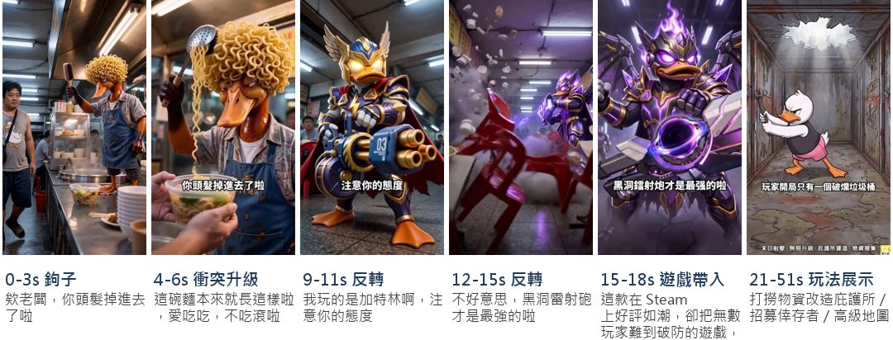
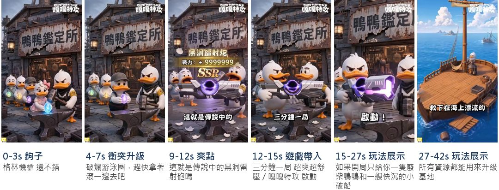
每支換場景，反覆強調同一個機制或道具，讓玩家記住「要拿的是那一個」。
其他產品也在做：16 支
闖關機制劇情吵「這遊戲是假的」，最後都回到同一條過門跑道
Last Z數字門跑道射擊（3 支）
女生被留言說假，當場玩數字門
餐桌炫200萬戰力，接數字門跑道
泳池溺水開場，轉數字門打機甲
Last War水瓶過門跑道（2 支）
情侶吵假廣告，示範水瓶過門
媽媽說是假的，當場打水瓶過門
解謎救人每支換一場家人受困，用同一個解謎機制把人救回來
Gossip Harbor溫度條＋補牆洞生火保暖（3 支）
女兒凍暈，補牆生火拉溫度條
修女收留後，同樣補牆升溫
暴雪破屋，貼窗補牆點壁爐
Homescapes引導金幣流救家人（拉針／消除）（2 支）
奶奶一家受凍，拉針引金幣生火
一家困金幣槽，消除放金幣救人
經營選擇同一個二選一花錢卡，劇情都演成「暴富→亂花→破產」
Idle Startup二選一消費卡→破產（3 支）
被嫌窮後二選一花錢到破產
Axel買車追女友，同卡破產
Axel被開除創業，同卡亂花被查封
武器道具每支換一個場合，都用「你玩什麼武器」決定鴨子的地位
嘎嘎特攻 Duck Survival武器階級：嘎嘎槍 vs 加特林／黑洞砲（3 支）
麵攤以武器給面，嘎嘎槍被趕走
城門問能進化成什麼武器鴨
按摩店排隊，亮加特林壓人
遊戲題材重複曝光：三國群英傳策定九州
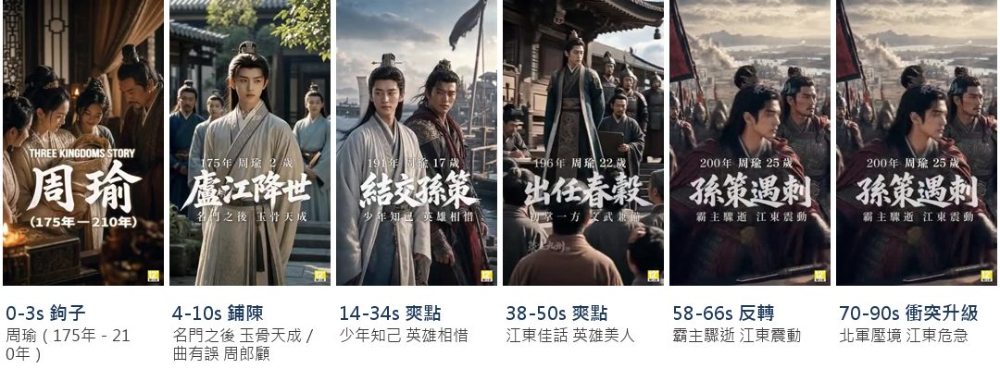
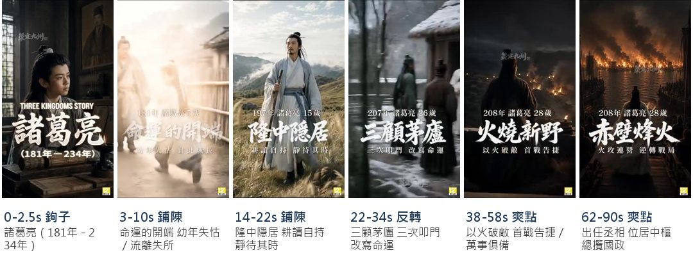
同一範本講不同角色的故事，不講玩法細節。老虎機有大量主題機台，每台都有可以講的故事。
其他產品也在做：18 支
歷史人物同一編年範本，每支講一位武將從少年到成名的一生
三國群英傳：策定九州三國武將編年傳記（2 支）
張遼篇：雁門少年到歸降曹操
呂布篇：九原降世到鳳儀亭
Call of DragonsAI插畫旁白講種族與神獸傳說（3 支）
同範本講矮人族屠巨人村崛起史
同範本換講叢林守護神豹的傳說
同範本換講黃龍對耶夢加得
文明同一字卡範本，逐一介紹各文明的統治者、城市與兵團
Rise of Kingdoms文明輪播（雕像／城市／兵團）（4 支）
維京王到中國皇帝，雕像逐級解鎖
巴比倫到維京，文明城市輪播
十字軍到蒙古騎兵，兵團行軍
鬼武者到戰象，各文明兵種圖鑑
角色形象同一育成範本，每支換一位偶像講她從笨拙到登台
学園アイドルマスター偶像成長形象片（2 支）
秦谷美鈴Lv1練到Lv10登台
換葛城リーリヤ，學發聲到登台
Love and Deepspace（戀與深空）男主角CG形象片，片尾同一LOVE卡（3 支）
LOVE卡範本，主角是Sylus
同範本換Zayne，刮鬍特寫
同範本換Rafayel形象
ウマ娘 プリティーダービー「新登場！」6秒角色形象片（2 支）
新登場範本，主角オルフェーヴル
同範本換カルストンライトオ
機台故事博弈類：用機台神話開場講故事
辣財神娛樂城AI神話海報開場講機台背景（2 支）
賽特4進化與分裂的神話對決
同範本換講哪吒對敖丙
不秀遊戲畫面，用演繹傳達玩法
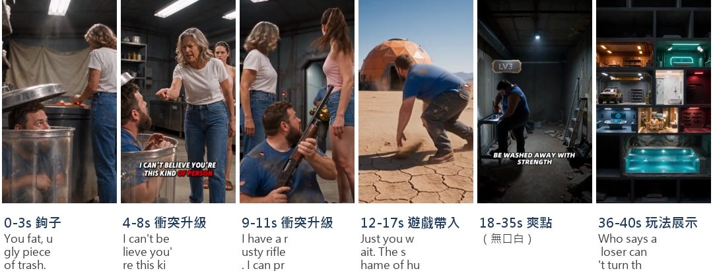
判定標準：全片沒有真實遊戲 UI，但用真人或 AI 演出讓人看懂核心玩法。只放主題 CG、沒演出玩法的不算。
其他產品：各自演繹什麼玩法：16 支
建造避難所沒有遊戲UI，用真人／AI演主角親手把破地方蓋成堡壘
Last Shelter: War Z演繹：挖地堡、逐層加房間升級避難所（3 支）
沙漠埋儲水槽，逐層擴成地堡
鑽鐵管通道，擴成整座地下基地
Day1到Day8逐日加電網菜園廚房
Dark War Survival演繹：撿廢料改裝木筏／車船避難所（2 支）
被趕下車，木筏一路疊成高塔
被女友嫌，改裝廢車廢船求生
Wild Water World（瘋狂水世界）演繹：海上撈物資、種菜、擴建木筏避難所（3 支）
真人在木筏釣魚種菜蓋兩層屋
廢巴士改海上家，加農場收倖存者
Day1到Day6木筏變章魚堡
探索求生用AI寫實演出跑地圖、搜物資、救人的生存任務
State of Survival演繹：跨地形探索搜刮、救倖存者（2 支）
被嘲後跨海島沙漠搜刮物資
墜崖校車救出醫生，取血清逃生
經營用動畫劇情演「賺錢→買房買車→破產」，不放真實經營畫面
Idle Office Tycoon演繹：賺錢、二選一花錢、破產重來的經營循環（2 支）
被戴綠帽擺檸檬水攤，暴富又破產
同款格子衫男，買直升機後破產
農場真手在3D迷你場景裡動手，演出開荒種田養動物
Family Farm Adventure演繹：開渠引水、種植、養動物復原荒地（2 支）
真手挖渠引水，乾地長出農田
真手引瀑布灌溉，播種養羊
牌桌對局漫畫／AI演一手德州撲克的心理戰，看完就懂怎麼玩
Holdem or Foldem演繹：德州撲克看牌、全下、比牌（2 支）
漫畫牌局：拿8 9同花，對手全下
AI黑幫牌局：AK全下，比牌翻盤
③ 博弈遊戲現況
先驅：大福（Jackpot World）
2021 年起大福在台灣大量投真人短劇，也取得成功。當時我們有跟，但拍攝成本太高、難以量產；現在 AI 能把製作成本降一半以上，是否是另一個突破口？
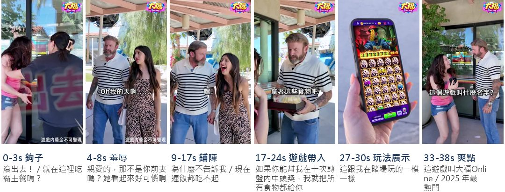
同一劇本：真人版 vs AI 翻拍版（美國，2026-04）
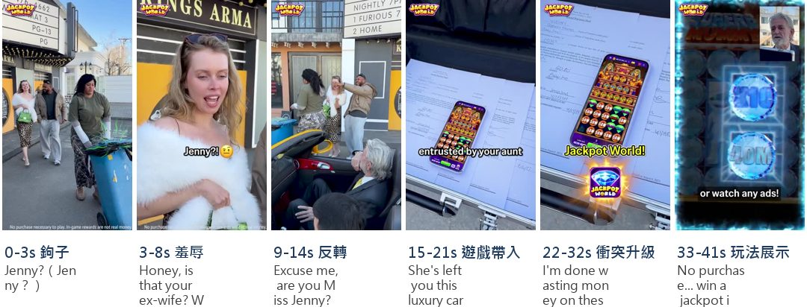
能證明的是「同劇本可以用 AI 低成本重做」。
A 羞辱或衝突後的逆襲 最大宗
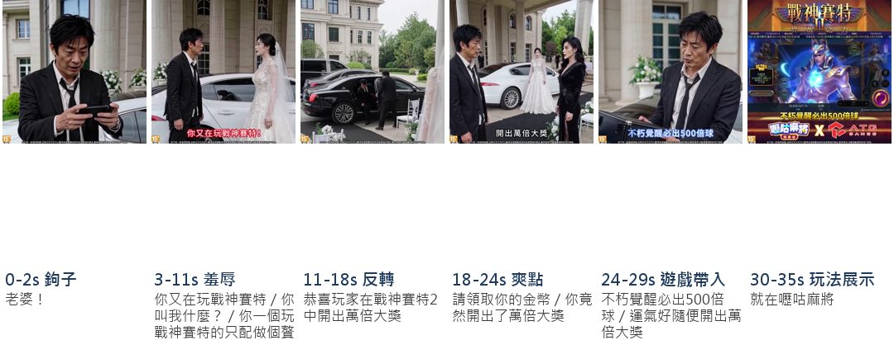
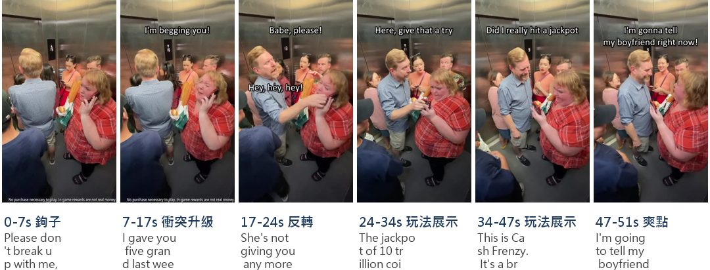
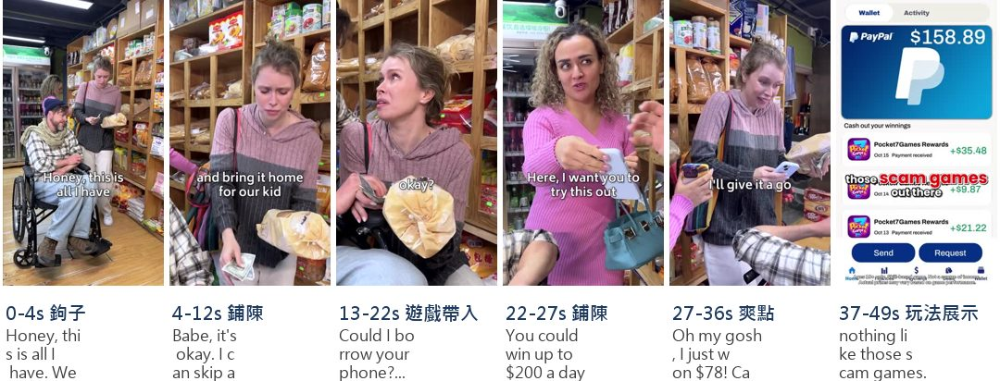
更多案例：21 支
劇本：前妻被前夫新歡嘲笑→手機中獎（7 支）
洗車場前妻被嘲，鑽進車裡開5500倍
同一洗車場稿真人版，車上中大獎
同一洗車場稿改水果卡通版
前妻求職被拒被嘲，前夫遞手機
同一支西方演員片，換嚦咕品牌
吃霸王餐被趕，玩老虎機翻身
前妻翻垃圾被嘲，律師宣布遺產
劇本：被家人伴侶當眾看扁→亮出遊戲錢或身分（6 支）
婆婆當眾罵媳婦花兒子的錢
飛機上婆婆嗆媳婦還想升艙
同婆媳稿：點VIP餐被罵沒工作
偷吃丈夫反嫌禮物貴，錢是遊戲贏
偷吃丈夫罵買名牌，妻亮提現
被甩不配當爸，原來是拉霸CEO
劇本：落難時陌生人遞手機（8 支）
孕婦付不出房租，陌生人遞手機
孕婦被撞翻菜又被公車丟下
孕婦求插隊，男子讓位借手機
窮媽媽買不起披薩被店員嘲笑
懷孕服務生打破盤子被開除
服務生上班第一天被當眾逼債
女管家被勒索，雇主送她遊戲
結帳找不到錢包，路人秀手機金幣
B 劇情本身就是玩法比喻
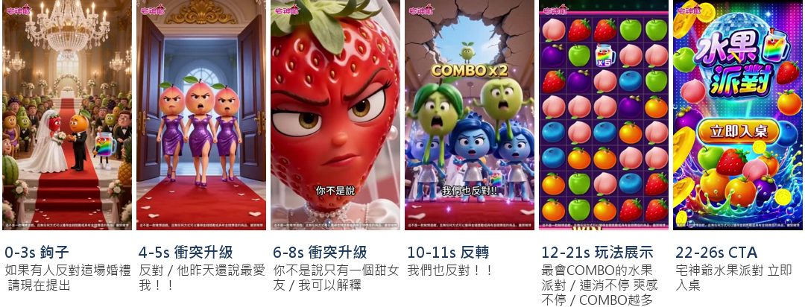
更多案例：5 支
劇情本身就是玩法比喻（5 支）
吐司兩邊切邊＝百家樂補牌兩邊
漁夫抓不到魚，魚都在777
小丑魚躲不掉，同伴被打成金幣
夫妻上法庭：地標被毀37次
實境秀質問他為何一直搶錢
還有哪些套路
C 日常輕喜劇、誤會梗＋賣點
生活小段子，或「以為在吵架、其實在聊遊戲」，最後帶一句賣點
點開看 26 支案例
D 善行得報
幫助弱者的人拿到遊戲並中獎，惡人在旁看著
點開看 6 支案例
E 揭露別家不出金
先演別家平台騙人、不給錢，再端出自家能出金（多為真錢、SS 類）
點開看 7 支案例
F 連續劇
有集數的連續劇，第一話先不放遊戲
點開看 1 支案例
博弈套路小結
- 衝突、羞辱開場：博弈遊戲廣告很常見。
- 不放遊戲畫面：在博弈類很少見，多數還是會放遊戲錄屏或賭具；但也有案例，可作為禁投地區嘗試的方向。
- 更多套路靠創意發揮：也借鑒娛樂遊戲和短劇的做法。
小結：美術的突破在「腳本創意」和「量產產線」
- 腳本創意：拆出各國偏好的題材與套路（被羞辱後逆襲、相同角色、相同機制、題材重複曝光、用演繹傳達玩法），轉成我們產品能用的腳本。
- 量產產線：AI 讓一份腳本能低成本換場景、換語言、換角色，支撐「同角色／同機制／同題材」需要的大量變體。
回到議題：策略地圖
看完各國短劇、娛樂遊戲與博弈遊戲的套路，回到同一張地圖：這些套路能不能幫我們突破拉新瓶頸，或在 Meta 受限下找到新的曝光機會？
① 蹭短劇
- 借流量高的內容拿到更多曝光，也有所本地找到成功率高的題材
- 受限制的國家，能否不放遊戲畫面也能投放
- 短劇 AI 人物的法規還模糊，能否借鑑熱門角色，蹭到更多流量
② 依習性投放
- 在對的地方投給對的人，讓特殊腳本真正發揮效果
- 美國博弈廣告已大量使用，結合熱門題材爭取更多曝光機會
③ 設目標
四美術、行銷、營運、產品四方合作
若要達成擴大曝光、突破法規限制、注入更多新受眾，四方如何從實做 → 策略 → 目標 → 產品共同串聯？
分工下可以探討的議題有哪些？
A擴大用戶、搶奪曝光（同質競品或短劇平台）
| 美術 | 行銷 | 營運 | 產品 |
|---|---|---|---|
| 腳本創意與量產 相同角色，打造新的記憶點 蹭短劇 IP 角色，蹭流量 相同遊戲機制，打造新的記憶點 熱門逆襲題材，蹭流量 |
投放預算配比、受眾設定要不要調整？ 例如：部分預算移回買量型？ 受眾設定調整到短劇用戶，開獨立包？ |
廣告題材要不要在遊戲內呼應？ 例如：廣告裡的角色、機台故事做成遊戲內聯動活動？ 主軸若是品牌與印象，KPI 怎麼定？ 例如：自然量、搜尋量、討論度？ |
有效的買量題材要不要開發？ 例如：低 CPI 的角色或套路，開發成新機台、新內容，鞏固新用戶留存或付費？ |
B主攻付費，強化付費受眾的曝光機會
| 美術 | 行銷 | 營運 | 產品 |
|---|---|---|---|
| 被羞辱後的逆襲：強化想翻身的情緒 相同遊戲機制：真金類用劇情強化安全、信用、快速到帳 |
付費型受眾要不要加入短劇興趣？ 例如：在付費型活動裡加一組短劇受眾包做對照？ |
遊戲賣點怎麼和廣告連動？ 例如：廣告強調的機台、福利，進遊戲第一眼就看得到？ |
廣告承諾和遊戲體驗一致嗎？ 例如：劇中的翻身時刻，新手期能不能重現？ |
紅線：到帳、提現畫面必須真實；社交博弈廣告須聲明「社交遊戲成功不代表真錢賭博會成功」ⓘ。
CMeta 投放受限市場：突破法規限制（待討論）
| 美術 | 行銷 | 營運 | 產品 |
|---|---|---|---|
| 不秀遊戲畫面，用演繹傳達玩法 結合相同角色、相同機制、題材重複曝光加深印象 |
帳號安全怎麼評估？ 例如：Meta 政策按產品類別限制台馬社交博弈ⓘ，素材型態不改變判定，風險要先評估？ 短劇格式是否改放 YouTube？ |
沒有遊戲畫面的素材，進遊戲後的落差怎麼接？ 例如：首登畫面直接呈現廣告裡演出的玩法？ |
有沒有適合在受限市場曝光的品牌內容？ 例如：角色、機台故事能不能獨立成 IP 內容？ |
五小規模測試做法
六總結：兩個要一起討論的問題
面對新用戶導入瓶頸
透過短劇打開新的受眾池。若行銷操作下真的拿到便宜的 CPI、CPM，是否值得為新用戶打造新的遊戲體驗，鞏固新用戶的付費與留存？
要一起想：短劇帶進來的人，進遊戲第一眼看到的是不是他在廣告裡被吸引的那件事？
面對投放限制
是否透過短劇包裝、不呈現遊戲畫面，嘗試打開產品記憶點？階段目標怎麼訂？
要一起想：第一階段看曝光與自然流量，還是直接看安裝？多久沒起色就停？
數據只引用正式報告（A／A-）；自家拆解樣本只用來找創意連結，不當市場數字。